首页 > 编程笔记
Python Tkinter入门教程（简明版）
图形用户界面（Graphical User Interface，GUI）又称图形用户接口，是指采用图形方式显示的计算机操作用户界面。Python 提供了多个图形界面的开发库，推荐使用官方提供的 Tkinter 进行图形化处理。
Tkinter 是 Python 的标准 GUI 库，应用非常广泛。由于 Tkinter 是内置到 Python 安装包中的，因此只要安装好 Python 就能加载 tkinter。对于简单的图形界面，使用 tkinter 可以轻松完成。
因为当安装好 Python 时，Tkinter 也会随之安装好，所以用户要使用 Tkinter 的功能，只需要执行如下命令加载 Tkinter 模块即可。
如果想要关闭此窗口，那么只要单击窗口右上方的“关闭”按钮即可。
1) anchor：定义控件在窗口内的位置或文字信息在控件内的位置，可以是 N（北）、NE（东北）、E（东）、SE（东南）、S（南）、SW（西南）、W（西）、NW（西北）或 CENTER（中间）。
2) background（bg）：定义控件的背景颜色，颜色值可以是表 2 中的名称，也可以是 "#rrggbb" 形式的数字。用户可以使用 background 或 bg。
3) bitmap：定义显示在控件内的 bitmap 图片文件。
4) borderwidth：定义控件的边框宽度，单位是像素。
5) command：当控件有特定的动作发生时，如单击按钮，定义动作发生时所调用的 Python 函数。
6) cursor：定义当鼠标指针移到控件上时鼠标指针的类型，可使用的鼠标指针类型有 crosshair、watch、xterm、fleur 及 arrow。
7) font：如果控件支持标题文字，就可以使用此属性来定义标题文字的字体格式。此属性是一个元组格式：（字体，大小，字体样式），字体样式可以是 bold、italic、underline 及 overstrike。用户可以同时设置多个字体样式，中间以空白隔开。
8) foreground（fg）：定义控件的前景（文字）颜色，颜色值可以是表 2 中的名称，也可以是"#rrggbb"形式的数字。用户可以使用 foreground 或 fg。
9) height：如果是 Button、Label 或 Text 控件，此属性定义以字符数目为单位的高度。其他的控件则是定义以像素为单位的高度。
下面的示例定义一个字符高度为 5 的按钮。
10) highlightbackground：定义控件在没有键盘焦点时，画 hightlight 区域的颜色。
11) highlightcolor：定义控件在有键盘焦点时，画 hightlight 区域的颜色。
12) highlightthickness：定义 hightlight 区域的宽度，以像素为单位。
13) image：定义显示在控件内的图片文件。
14) justify：定义多行文字标题的排列方式，此属性可以是 LEFT、CENTER 或 RIGHT。
15) padx,pady：定义控件内的文字或图片与控件边框之间的水平和垂直距离。
下面的示例定义按钮内的文字与边框之间的水平距离为 20 像素，垂直距离为 40 像素。
16) relief：定义控件的边框形式。所有的控件都有边框，不过有些控件的边框默认是不可见的。如果是 3D 形式的边框，那么此属性可以是 SUNKEN、RIDGE、RAISED 或 GROOVE；如果是 2D 形式的边框，那么此属性可以是 FLAT 或 SOLID。
下面的示例定义一个平面的按钮。
17) text：定义控件的标题文字。
18) variable：将控件的数值映射到一个变量。当控件的数值改变时，此变量也会跟着改变。同样地，当变量改变时，控件的数值也会跟着改变。此变量是 StringVar 类、IntVar 类、DoubleVar 类及 BooleanVar 类的实例变量，这些实例变量可以分别使用 get() 与 set() 方法读取与设置。
19) width：如果是 Button、Label 或 Text 控件，此属性定义以字符数目为单位的宽度。其他控件则是定义以像素为单位的宽度。
下面的示例定义一个字符宽度为 16 的按钮。
如果用户想要将一组控件依照顺序放入，就必须将这些控件的 anchor 属性设成相同的。如果没有设置任何选项，这些控件就会从上而下排列。
pack() 方法有以下选项：
下面的示例是在窗口内创建 4 个窗体，在每一个窗体内创建 3 个按钮，使用不同的参数创建这些窗体与按钮。
grid() 方法有以下选项：
例如，使用 grid() 方法创建一个 5×5 的按钮数组：
place() 方法有以下选项：
例如，使用 place() 方法创建两个按钮。第一个按钮的位置在距离窗体左上角的(40, 40)坐标处，第二个按钮的位置在距离窗体左上角的(140, 80)坐标处。按钮的宽度均为 80 像素，高度均为 40 像素。
键盘事件说明如下：
下面的示例是在窗口内创建一个窗体，在窗体内创建一个文字标签。在主窗口内处理所有的键盘事件，当有按键时，将键盘的符号与 ASCII 码写入文字标签内。
Button控件的方法如下：
Button widget的属性如下：
例如，在按钮的第一个文字上添加下画线。
Canvas控件的方法如下：
下面的示例是在窗口客户区的 (13, 50) 与 (240, 213) 坐标间画一个弧形，起始角度是 0，结束角度是 270°，使用红色填满弧形区块。
Checkbutton控件的属性如下：
Checkbutton控件的方法如下：
下面的示例是在窗口客户区内创建 3 个复选框，并将 3 个复选框靠左对齐，然后选择第一个复选框。
Entry控件的属性为 textvariable，此属性为用户输入的文字，或者是要显示在 Entry 控件内的文字。
Entry 控件的方法为 get()，此方法可以读取 Entry 控件内的文字。
下面的示例是在窗口内创建一个窗体，在窗体内创建一个文本框，让用户输入一个表达式。在窗体内创建一个按钮，单击此按钮即可计算文本框内所输入的表达式。在窗体内创建一个文字标签，将表达式的计算结果显示在此文字标签上。
当用户在 Entry 控件内输入数值时，其值会存储在 tkinter 的 StringVar 类内。可以将 Entry 控件的 textvariable 属性设置成 StringVar 类的实例变量，使用户输入的数值自动显示在 Entry 控件上。
Listbox 控件的属性如下：
Listbox控件的方法如下：
下面的示例创建一个列表框，并插入 8 个选项。
Menu控件的方法如下：
下表列举了 options 可以使用的选项和具体含义：
下面的示例创建一个下拉式菜单，并在菜单项目内加入快捷键。
Message 控件的功能与 Label 控件的类似，但是 Message 控件多了自动编排的功能。
例如，创建一个 Message 控件。
为了让一群单选按钮可以执行相同的功能，必须设置这群单选按钮的 variable 属性为相同值，value 属性值就是各单选按钮的数值。
Radiobutton 控件的属性如下：
Radiobutton控件的方法如下：
下面的示例创建 5 个运动项目的单选按钮及一个文字标签，将用户的选择显示在文字标签上。
Scale控件的方法如下：
下面的示例创建 3 个 Scale 控件，分别用来选择 R、G、B 三原色的值。移动 Scale 控件到显示颜色的位置后，单击 Show color 按钮即可将 RGB 的颜色显示在一个 Label 控件上。
Scrollbar 控件的方法如下：
下面的示例创建一个列表框（60 个选项），包括一个水平滚动条及一个垂直滚动条。当移动水平或垂直滚动条时，改变列表框的水平或垂直方向可见范围。
Text控件的属性如下：
Text控件的方法如下：
Text 控件支持 3 种类型的特殊结构，即 Mark、Tag 及 Index。
Mark 用来当作书签，书签可以帮助用户快速找到文本框内容的指定位置。tkinter 提供两种类型的书签，即 INSERT 与 CURRENT。INSERT 书签指定光标插入的位置，CURRENT 书签指定光标最近的位置。
Text控件用来操作书签的方法如下：
Tag 用来对一个范围内的文字指定一个标签名称，如此就可以很容易地同时修改此范围内的文字的设置值。Tag 也可以用于将一个范围与一个 callback 函数连接。tkinter 提供一种类型的 Tag：SEL。SEL 指定符合目前条件的选择范围。
Text 控件用来操作 Tag 的方法如下：
Index 用于指定字符的真实位置。tkinter 提供下面类型的 Index：INSERT、CURRENT、END、line.column、line.end、用户自定义书签、用户自定义标签、选择范围、窗口的坐标、嵌入对象的名称和表达式。
下面的示例创建一个 Text 控件，并在 Text 控件内分别插入一段文字及一个按钮。
Tkinter 是 Python 的标准 GUI 库，应用非常广泛。由于 Tkinter 是内置到 Python 安装包中的，因此只要安装好 Python 就能加载 tkinter。对于简单的图形界面，使用 tkinter 可以轻松完成。
因为当安装好 Python 时，Tkinter 也会随之安装好，所以用户要使用 Tkinter 的功能，只需要执行如下命令加载 Tkinter 模块即可。
import tkinter下面的示例使用 Tkinter 创建一个简单的图形用户界面。
import tkinter
win = tkinter.Tk()
win.title(string = "古诗鉴赏")
b = tkinter.Label(win, text="火树银花合，星桥铁锁开。暗尘随马去，明月逐人来。",font=("
微软雅黑",14))
b.pack()
win.mainloop()
示例代码分析如下：
- 第 1 行：加载 Tkinter 模块。
- 第 2 行：使用 Tkinter 模块的 Tk() 方法创建一个主窗口。win 是此窗口的句柄。如果用户多次调用 Tk() 方法，就可以创建多个主窗口。
- 第 3 行：设置用户界面的标题为“古诗鉴赏”。
- 第 4 行：使用 Tkinter 模块的 Label() 方法在窗口内创建一个标签控件。其中，参数 win 是该窗口的句柄，参数 text 是标签控件的文字。Label() 方法返回此标签控件的句柄。
- 第 5 行：调用标签控件的 pack() 方法设置窗口的位置、大小等选项。
- 第 6 行：开始窗口的事件循环。
保存并运行程序，结果如下图所示。注意，Tkinter 也支持 Unicode 字符串。
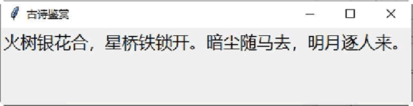
图 1 程序运行结果
图 1 程序运行结果
如果想要关闭此窗口，那么只要单击窗口右上方的“关闭”按钮即可。
Tkinter控件
Tkinter 包含 15 个控件，如下表所示。| 控件名称 | 说明 |
|---|---|
| Button | 按钮控件，在程序中显示按钮 |
| Canvas | 画布控件，用来画图形，如线条及多边形等 |
| Checkbutton | 多选框控件，用于在程序中提供多项选择框 |
| Entry | 输入控件，定义一个简单的文字输入字段 |
| Frame | 框架控件，定义一个窗体，以作为其他控件的容器 |
| Label | 标签控件，定义一个文字或图片标签 |
| Listbox | 列表框控件，定义一个下拉方块 |
| Menu | 菜单控件，定义一个菜单栏、下拉菜单和弹出菜单 |
| Menubutton | 菜单按钮控件，用于显示菜单项 |
| Message | 消息控件，定义一个对话框 |
| Radiobutton | 单选按钮控件，定义一个单选按钮 |
| Scale | 范围控件，定义一个滑动条，以帮助用户设置数值 |
| Scrollbar | 滚动条控件，定义一个滚动条 |
| Text | 文本控件，定义一个文本框 |
| Toplevel | 此控件与 Frame 控件类似，可以作为其他控件的容器。但是此控件有自己的最上层窗 口，可以提供窗口管理接口 |
1、大小的测量单位
一般在测量 Tkinter 控件内的大小时以像素为单位。例如，定义 Button 控件的文字与边框之间的水平距离为 20 像素，代码如下：Button(win, padx=20, text="关闭", command=win.quit).pack()也可以使用其他测量单位，如 cm（厘米）、mm（毫米）、in（英寸）、pt（打印机一个点的大小）。
2、共同属性
每一个 Tkinter 控件都有以下共同属性。1) anchor：定义控件在窗口内的位置或文字信息在控件内的位置，可以是 N（北）、NE（东北）、E（东）、SE（东南）、S（南）、SW（西南）、W（西）、NW（西北）或 CENTER（中间）。
2) background（bg）：定义控件的背景颜色，颜色值可以是表 2 中的名称，也可以是 "#rrggbb" 形式的数字。用户可以使用 background 或 bg。
| SystemActiveBorder | Syste mActiveCapti o n | SystemAppWorkspace |
|---|---|---|
| SystemBackground | SystemButtonFace | SystemButtonHighlight |
| SystemButtonShadow | SystemButtonText | SystemCaptionText |
| SystemDisabledText | SystemHighlight | SystemHighlightText |
| SystemlnavtiveBorder | SystemlnavtiveCaption | SystemlnactiveCaptionText |
| SystemMenu | SystemMenuText | SystemScrollbar |
| SystemWindow | SystemWindowFrame | SystemWindowText |
3) bitmap：定义显示在控件内的 bitmap 图片文件。
4) borderwidth：定义控件的边框宽度，单位是像素。
5) command：当控件有特定的动作发生时，如单击按钮，定义动作发生时所调用的 Python 函数。
6) cursor：定义当鼠标指针移到控件上时鼠标指针的类型，可使用的鼠标指针类型有 crosshair、watch、xterm、fleur 及 arrow。
7) font：如果控件支持标题文字，就可以使用此属性来定义标题文字的字体格式。此属性是一个元组格式：（字体，大小，字体样式），字体样式可以是 bold、italic、underline 及 overstrike。用户可以同时设置多个字体样式，中间以空白隔开。
8) foreground（fg）：定义控件的前景（文字）颜色，颜色值可以是表 2 中的名称，也可以是"#rrggbb"形式的数字。用户可以使用 foreground 或 fg。
9) height：如果是 Button、Label 或 Text 控件，此属性定义以字符数目为单位的高度。其他的控件则是定义以像素为单位的高度。
下面的示例定义一个字符高度为 5 的按钮。
Button(win, height=5, text="关闭", command=win.quit).pack()
10) highlightbackground：定义控件在没有键盘焦点时，画 hightlight 区域的颜色。
11) highlightcolor：定义控件在有键盘焦点时，画 hightlight 区域的颜色。
12) highlightthickness：定义 hightlight 区域的宽度，以像素为单位。
13) image：定义显示在控件内的图片文件。
14) justify：定义多行文字标题的排列方式，此属性可以是 LEFT、CENTER 或 RIGHT。
15) padx,pady：定义控件内的文字或图片与控件边框之间的水平和垂直距离。
下面的示例定义按钮内的文字与边框之间的水平距离为 20 像素，垂直距离为 40 像素。
Button(win, padx=20, pady=40, text="关闭", command=win.quit).pack()
16) relief：定义控件的边框形式。所有的控件都有边框，不过有些控件的边框默认是不可见的。如果是 3D 形式的边框，那么此属性可以是 SUNKEN、RIDGE、RAISED 或 GROOVE；如果是 2D 形式的边框，那么此属性可以是 FLAT 或 SOLID。
下面的示例定义一个平面的按钮。
Button(win, relief=FLAT, text="关闭", command=win.quit).pack()
17) text：定义控件的标题文字。
18) variable：将控件的数值映射到一个变量。当控件的数值改变时，此变量也会跟着改变。同样地，当变量改变时，控件的数值也会跟着改变。此变量是 StringVar 类、IntVar 类、DoubleVar 类及 BooleanVar 类的实例变量，这些实例变量可以分别使用 get() 与 set() 方法读取与设置。
19) width：如果是 Button、Label 或 Text 控件，此属性定义以字符数目为单位的宽度。其他控件则是定义以像素为单位的宽度。
下面的示例定义一个字符宽度为 16 的按钮。
Button(win, width=16, text="关闭", command=win.quit).pack()
3、布局控件的位置
所有 Tkinter 控件都可以使用以下方法设置控件在窗口内的位置：- pack()方法：将控件放置在父控件内之前，规划此控件在区块内的位置。
- grid()方法：将控件放置在父控件内之前，规划此控件为一个表格类型的架构。
- place()方法：将控件放置在父控件内的特定位置。
1) pack()方法
pack() 方法依照其内的属性设置，将控件放置在 Frame 控件（窗体）或窗口内。当用户创建一个 Frame 控件后，就可以放入控件。Frame 控件内存储控件的位置叫作 parcel。如果用户想要将一组控件依照顺序放入，就必须将这些控件的 anchor 属性设成相同的。如果没有设置任何选项，这些控件就会从上而下排列。
pack() 方法有以下选项：
- expand：此选项让控件使用所有剩下的空间。如此，当窗口改变大小时，才能让控件使用多余的空间。如果 expand 等于 1，当窗口改变大小时，窗体就会占满整个窗口剩余的空间；如果 expand 等于 0，当窗口改变大小时，窗体就维持不变。
- fill：此选项决定控件如何填满 parcel 的空间，可以是 X、Y、BOTH 或 NONE，此选项必须在 expand 等于 1 时才有作用。当 fill 等于 X 时，窗体会占满整个窗口 X 方向剩余的空间；当 fill 等于 Y 时，窗体会占满整个窗口 Y 方向剩余的空间；当 fill 等于 BOTH 时，窗体会占满整个窗口剩余的空间；当 fill 等于 NONE 时，窗体维持不变。
- ipadx、ipady：这 2 个选项与 fill 选项共同使用，以定义窗体内的控件与窗体边界之间的距离。此选项的单位是像素，也可以是其他测量单位，如厘米、英寸等。
- padx、pady：这 2 个选项定义控件之间的距离，单位是像素，也可以是其他测量单位，如厘米、英寸等。
- side：此选项定义控件放置的位置，可以是 TOP（靠上对齐）、BOTTOM（靠下对齐）、LEFT（靠左对齐）或 RIGHT（靠右对齐）。
下面的示例是在窗口内创建 4 个窗体，在每一个窗体内创建 3 个按钮，使用不同的参数创建这些窗体与按钮。
from tkinter import * #主窗口 win = Tk() #创建第一个窗体 frame1 = Frame(win, relief=RAISED, borderwidth=2) frame1.pack(side=TOP, fill=BOTH, ipadx=13, ipady=13, expand=0) Button(frame1, text="Button 1").pack(side=LEFT, padx=13, pady=13) Button(frame1, text="Button 2").pack(side=LEFT, padx=13, pady=13) Button(frame1, text="Button 3").pack(side=LEFT, padx=13, pady=13) #创建第二个窗体 frame2 = Frame(win, relief=RAISED, borderwidth=2) frame2.pack(side=BOTTOM, fill=NONE, ipadx="1c", ipady="1c", expand=1) Button(frame2, text="Button 4").pack(side=RIGHT, padx="1c", pady="1c") Button(frame2, text="Button 5").pack(side=RIGHT, padx="1c", pady="1c") Button(frame2, text="Button 6").pack(side=RIGHT, padx="1c", pady="1c") #创建第三个窗体 frame3 = Frame(win, relief=RAISED, borderwidth=2) frame3.pack(side=LEFT, fill=X, ipadx="0.1i", ipady="0.1i", expand=1) Button(frame3, text="Button 7").pack(side=TOP, padx="0.1i", pady="0.1i") Button(frame3, text="Button 8").pack(side=TOP, padx="0.1i", pady="0.1i") Button(frame3, text="Button 9").pack(side=TOP, padx="0.1i", pady="0.1i") #创建第四个窗体 frame4 = Frame(win, relief=RAISED, borderwidth=2) frame4.pack(side=RIGHT, fill=Y, ipadx="13p", ipady="13p", expand=1) Button(frame4, text="Button 13").pack(side=BOTTOM, padx="13p", pady="13p") Button(frame4, text="Button 11").pack(side=BOTTOM, padx="13p", pady="13p") Button(frame4, text="Button 12").pack(side=BOTTOM, padx="13p", pady="13p") #开始窗口的事件循环 win.mainloop()保存并运行程序，结果如图 2 所示。
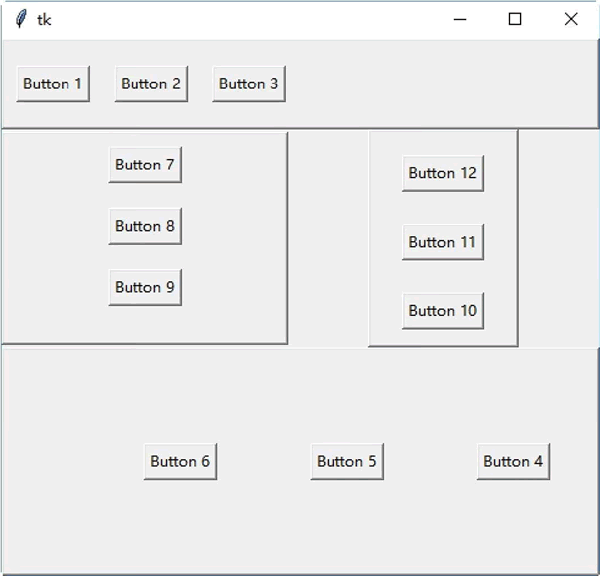
图 2 程序运行结果
图 2 程序运行结果
2) grid()方法
grid() 方法将控件依照表格的行列方式放置在窗体或窗口内。grid() 方法有以下选项：
- row：此选项设置控件在表格中的第几列。
- column：此选项设置控件在表格中的第几栏。
- columnspan：此选项设置控件在表格中合并栏的数目。
- rowspan：此选项设置控件在表格中合并列的数目。
例如，使用 grid() 方法创建一个 5×5 的按钮数组：
from tkinter import *
#主窗口
win = Tk()
#创建窗体
frame = Frame(win, relief=RAISED, borderwidth=2)
frame.pack(side=TOP, fill=BOTH, ipadx=5, ipady=5, expand=1)
#创建按钮数组
for i in range(5):
for j in range(5):
Button(frame, text="(" + str(i) + "," + str(j)+ ")").grid(row=i, column=j)
#开始窗口的事件循环
win.mainloop()
保存并运行程序，结果如图 3 所示。
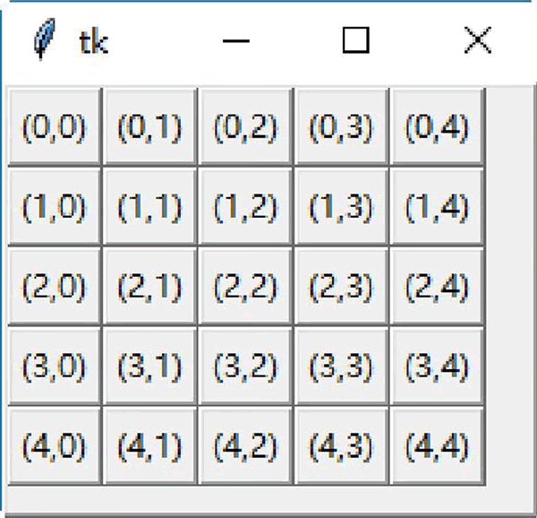
图 3 程序运行结果
图 3 程序运行结果
3) place()方法
place() 方法设置控件在窗体或窗口内的绝对地址或相对地址。place() 方法有以下选项：
- anchor：此选项定义控件在窗体或窗口内的方位，可以是 N、NE、E、SE、S、SW、W、NW 或 CENTER。默认值是 NW，表示在左上角方位。
- bordermode：此选项定义控件的坐标是否要考虑边界的宽度。此选项可以是 OUTSIDE 或 INSIDE，默认值是 INSIDE。
- height：此选项定义控件的高度，单位是像素。
- width：此选项定义控件的宽度，单位是像素。
- in(in_)：此选项定义控件相对于参考控件的位置。若在键值中使用，则必须使用in_。
- relheight：此选项定义控件相对于参考控件（使用 in_ 选项）的高度。
- relwidth：此选项定义控件相对于参考控件（使用 in_ 选项）的宽度。
- relx：此选项定义控件相对于参考控件（使用 in_ 选项）的水平位移。若没有设置 in_ 选项，则是相对于父控件的水平位移。
- rely：此选项定义控件相对于参考控件（使用 in_ 选项）的垂直位移。若没有设置 in_ 选项，则是相对于父控件的垂直位移。
- x：此选项定义控件的绝对水平位置，默认值是 0。
- y：此选项定义控件的绝对垂直位置，默认值是 0。
例如，使用 place() 方法创建两个按钮。第一个按钮的位置在距离窗体左上角的(40, 40)坐标处，第二个按钮的位置在距离窗体左上角的(140, 80)坐标处。按钮的宽度均为 80 像素，高度均为 40 像素。
from tkinter import * win = Tk() #创建窗体 frame = Frame(win, relief=RAISED, borderwidth=2, width=400, height=300) frame.pack(side=TOP, fill=BOTH, ipadx=5, ipady=5, expand=1) #第一个按钮的位置在距离窗体左上角的(40, 40)坐标处 button1 = Button(frame, text="Button 1") button1.place(x=40, y=40, anchor=W, width=80, height=40) #第二个按钮的位置在距离窗体左上角的(140, 80)坐标处 button2 = Button(frame, text="Button 2") button2.place(x=140, y=80, anchor=W, width=80, height=40) win.mainloop()保存并运行程序，结果如图 4 所示。
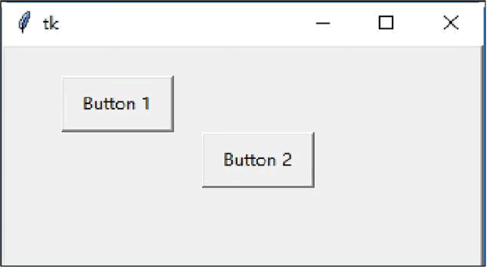
图 4 程序运行结果
图 4 程序运行结果
Tkinter的事件
有时候在使用 Tkinter 创建图形模式应用程序的过程中需要处理一些事件，如键盘、鼠标等动作。只要设置好事件处理例程（此函数称为 callback），就可以在控件内处理这些事件。使用的语法如下：
def function(event):
widget.bind("<event>", function)
参数的含义如下：
- widget是 tkinter 控件的实例变量。
- <event>是事件的名称。
- function 是事件处理例程。tkinter 会传给事件处理例程一个 event 变量，此变量内包含事件发生时的 x、y 坐标（鼠标事件）及 ASCII 码（键盘事件）等。
1) 事件的属性
当某个事件发生时，Tkinter 会传给事件处理例程一个 event 变量，此变量包含以下属性：- char：键盘的字符码，如"a"键的char属性等于"a"，F1 键的 char 属性无法显示。
- keycode：键盘的 ASCII 码，如"a"键的 keycode 属性等于 65。
- keysym：键盘的符号，如"a"键的 keysym 属性等于"a"，F1 键的 keysym 属性等于"F1"。
- height,width：控件的高度与宽度，单位是像素。
- num：事件发生时的鼠标按键码。
- widget：事件发生所在的控件实例变量。
- x,y：目前的鼠标光标位置。
- x_root,y_root：相对于屏幕左上角目前的鼠标光标位置。
- type：显示事件的种类。
2) 事件绑定方法
用户可以使用 tkinter 控件的以下方法将控件与事件绑定起来。- after(milliseconds [, callback [, arguments]])：在 milliseconds 事件后调用 callback 函数，arguments 是 callback 函数的参数。此方法返回一个 identifier 值，可以应用在 after_cancel() 方法中。
- after_cancel(identifier)：取消 callback 函数，identifier 是 after() 函数的返回值。
- after_idle(callback, arguments)：当系统在 idle 状态（无事可做）时，调用 callback 函数。
- bindtags()：返回控件所使用的绑定搜索顺序。返回值是一个元组，包含搜索绑定所用的命名空间。
- bind(event, callback)：设置 event 事件的处理函数 callback。可以使用 bind(event, callback, "+") 格式设置多个 callback 函数。
- bind_all(event, callback)：设置 event 事件的处理函数 callback。可以使用 bind_all(event,callback, "+")格式设置多个 callback 函数。此方法可以设置公用的快捷键。
- bind_class(widgetclass, event, callback)：设置 event 事件的处理函数 callback，此 callback 函数由 widgetcalss 类而来。可以使用 bind_class(widgetclass, event, callback, "+") 格式设置多个 callback 函数。
- <Configure>：此实例变量可以用于指示控件的大小改变，或者移到新的位置。
- unbind(event)：删除 event 事件与 callback 函数的绑定。
- unbind_all(event)：删除应用程序附属的 event 事件与 callback 函数的绑定。
- unbind_class(event)：删除 event 事件与 callback 函数的绑定。此 callback 函数由 widgetcalss 类而来。
3) 鼠标事件
当处理鼠标事件时，1 代表鼠标左键，2 代表鼠标中间键，3 代表鼠标右键。鼠标事件说明如下：- <Enter>：此事件在鼠标指针进入控件时发生。
- <Leave>：此事件在鼠标指针离开控件时发生。
- <Button-1>、<ButtonPress-1>、或<1>：此事件在控件上单击鼠标左键时发生。同理，<Button-2>是在控件上单击鼠标中间键时发生，<Button-3>是在控件上单击鼠标右键时发生。
- <B1-Motion>：此事件在单击鼠标左键、移动控件时发生。
- <ButtonRelease-1>：此事件在释放鼠标左键时发生。
- <Double-Button-1>：此事件在双击鼠标左键时发生。
4) 键盘事件
thinter 事件可以处理所有的键盘事件，包括 Ctrl、Alt、F1、Home 等特殊键。键盘事件说明如下：
- <Key>：此事件在按下ASCII码48～90时发生，即数字键、字母键及+、～等符号。
- <Control-Up>：此事件在按下Ctrl+Up组合键时发生。同理，可以使用类似的名称在Alt、Shift键后加上Up、Down、Left与Right键。
- 其他按键，使用其按键名称，包括<Return>、<Escape>、<F1>、<F2>、<F3>、<F4>、<F5>、<F6>、<F7>、<F8>、<F9>、<F13>、<F11>、<F12>、<Num_Lock>、<Scroll_Lock>、<Caps_Lock>、<Print>、<Insert>、<Delete>、<Pause>、<Prior>（Page Up）、<Next>（Page Down）、<BackSpace>、<Tab>、<Cancel>（Break）、<Control_L>（任何的Ctrl键)、<Alt_L>（任何的Alt键）、<Shift_L>（任何的Shift键）、<End>、<Home>、<Up>、<Down>、<Left>、<Right>。
下面的示例是在窗口内创建一个窗体，在窗体内创建一个文字标签。在主窗口内处理所有的键盘事件，当有按键时，将键盘的符号与 ASCII 码写入文字标签内。
from tkinter import *
#处理在窗体内按下键盘按键(非功能键)的事件
def handleKeyEvent(event):
label1["text"] = "You press the " + event.keysym + " key\n"
label1["text"] += "keycode = " + str(event.keycode)
win = Tk()
#创建窗体
frame = Frame(win, relief=RAISED, borderwidth=2, width=300, height=200)
#将主窗口与键盘事件连接
eventType = ["Key", "Control-Up", "Return", "Escape", "F1", "F2", "F3", "F4",
"F5",
"F6", "F7", "F8", "F9", "F13", "F11", "F12", "Num_Lock", "Scroll_Lock",
"Caps_Lock", "Print", "Insert", "Delete", "Pause", "Prior", "Next",
"BackSpace",
"Tab", "Cancel", "Control_L", "Alt_L", "Shift_L", "End", "Home", "Up", "Down",
"Left", "Right"]
for type in eventType:
win.bind("<" + type + ">", handleKeyEvent)
#文字标签，显示键盘事件的种类
label1 = Label(frame, text="No event happened", foreground="#0000ff", \
background="#00ff00")
label1.place(x=16, y=20)
#设置窗体的位置
frame.pack(side=TOP)
win.mainloop()
保存并运行程序，按下键盘上的 t 键，结果如图 5 所示。
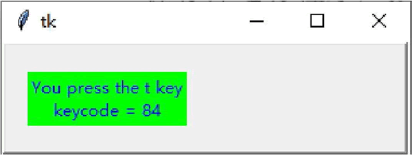
图 5 程序运行结果
图 5 程序运行结果
Button控件
Button 控件用于创建按钮，按钮内可以显示文字或图片。Button控件的方法如下：
- flash()：将前景颜色与背景颜色互换，以产生闪烁的效果。
- invoke()：执行command属性所定义的函数。
Button widget的属性如下：
| widget 属性 | 描 述 |
|---|---|
| activebackground | 按钮在作用时的背景颜色。 |
| activeforeground |
按钮在作用时的前景颜色。例如：
Button(win, activeforeground="#ff0000", activebackground="#00ff00", \
text="关闭", command=win.quit).pack()
|
| bitmap |
显示在按钮上的位图，此属性只有在忽略 image 属性时才有用。 此属性一般可以设置为 gray12、gray25、gray50、gray75、hourglass、error、questhead、info、warning 或 question。也可以直接使用 XBM(X Bitmap) 文件，在 XBM 文件名称前添加一个 @ 符号，如 bitmap=@hello.xbm。例如： Button(win, bitmap="question", command=win.quit).pack() |
| default | 若设置此属性，则该按钮为默认按钮。 |
| disabledforeground | 按钮在无作用时的前景颜色。 |
| image | 显示在按钮上的图片，此属性的顺序在 text 与 bitmap 属性之前。 |
| state | 定义按钮的状态，可以是 NORMAL、ACTIVE 或 DISABLED。 |
| takefocus | 定义用户是否可以使用 Tab 键，以改变按钮的焦点。 |
| text | 显示在按钮上的文字。如果定义了 bitmap 或 image 属性，text 属性就不会被使用。 |
| underline | 一个整数偏移值，表示按钮上的文字中哪一个字符要加下画线。第一个字符的偏移值是 0。 |
例如，在按钮的第一个文字上添加下画线。
from tkinter import * win = Tk() Button(win, text="公司主页面", underline=0, command=win.quit).pack() win.mainloop()保存并运行程序，结果如图 6 所示。
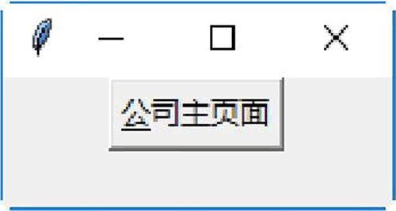
图 6 程序运行结果
图 6 程序运行结果
Canvas控件
Canvas 控件用于创建与显示图形，如弧形、位图、图片、线条、椭圆形、多边形及矩形等。Canvas控件的方法如下：
| 方 法 | 描 述 |
|---|---|
| create_arc(coord, start, extent, fill) | 创建一个弧形。其中，参数 coord 定义画弧形区块的左上角与右下角坐标，参数 start 定义画弧形区块的起始角度（逆时针方向），参数 extent 定义画弧形区块的结束角度（逆时针方向），参数 fill 定义填满弧形区块的颜色。 |
| create_bitmap(x, y, bitmap) | 创建一个位图。其中，参数 x 与 y 定义位图的左上角坐标；参数 bitmap 定义位图的来源，可为 gray12、gray25、gray50、gray75、hourglass、error、questhead、info、warning 或 question。也可以直接使用 XBM(X Bitmap) 文件，在 XBM 文件名称前添加一个 @ 符号，如 bitmap=@hello.xbm。 |
| create_image(x, y, image) | 创建一个图片。其中，参数 x 与 y 定义图片的左上角坐标；参数 image 定义图片的来源，必须是 tkinter 模块的 BitmapImage 类或 PhotoImage 类的实例变量。 |
| create_line(x0, y0, x1, y1, ... , xn, yn, options) | 创建一个线条。其中，参数 x0,y0,x1,y1,...,xn,yn 定义线条的坐标，参数 options 可以是 width 或 fill。width 定义线条的宽度，默认值是 1 像素。fill 定义线条的颜色，默认值是 black。 |
| create_oval(x0, y0, x1, y1, options) | 创建一个圆形或椭圆形。其中，参数 x0 与 y0 定义绘图区域的左上角坐标，参数 x1 与 y1 定义绘图区域的右下角坐标，参数 options 可以是 fill 或 outline。fill 定义填满圆形或椭圆形的颜色，默认值是 empty（透明）。outline 定义圆形或椭圆形的外围颜色。 |
| create_polygon(x0, y0, x1, y1, ... , xn, yn, options) | 创建一个至少3个点的多边形。其中，参数 x0, y0, x1, y1, ..., xn, yn 定义多边形的坐标，参数 options 可以是 fill、outline 或 splinesteps。fill 定义填满多边形的颜色，默认值是 black。outline 定义多边形的外围颜色，默认值是 black。splinestepsg 是一个整数，定义曲线的平滑度。 |
| create_rectangle(x0, y0, x1, y1, options) | 创建一个矩形。其中，参数 x0 与 y0 定义矩形的左上角坐标，参数 x1 与 y1 定义矩形的右下角坐标，参数 options 可以是 fill 或 outline。fill 定义填满矩形的颜色，默认值是 empty（透明）。outline 定义矩形的外围颜色，默认值是 black。 |
| create_text(x0, y0, text, options) | 创建一个文字字符串。其中，参数 x0 与 y0 定义文字字符串的左上角坐标，参数 text 定义文字字符串的文字，参数 options 可以是 anchor 或 fill。anchor 定义(x0, y0)在文字字符串内的位置，可以是 N、NE、E、SE、S、SW、W、NW 或 CENTER，默认值是 CENTER。fill 定义文字字符串的颜色，默认值是 empty。 |
from tkinter import * win = Tk() coord = 13, 50, 240, 213 canvas = Canvas(win) canvas.create_arc(coord, start=0, extent=270, fill="red") canvas.pack() win.mainloop()保存并运行程序，结果如图 7 所示。
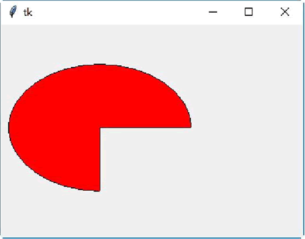
图 7 程序运行结果
图 7 程序运行结果
Checkbutton控件
Checkbutton控件用于创建复选框。Checkbutton控件的属性如下：
- onvalue,offvalue：设置 Checkbutton 控件的 variable 属性指定的变量所要存储的数值。若复选框没有被选中，则此变量的值为 offvalue；若复选框被选中，则此变量的值为 onvalue。
- indicatoron：设置此属性为 0，可以将整个控件变成复选框。
Checkbutton控件的方法如下：
- select()：选中复选框，并设置变量的值为 onvalue。
- flash()：将前景颜色与背景颜色互换，以产生闪烁的效果。
- invoke()：执行 command 属性所定义的函数。
- toggle()：改变复选框的状态，如果复选框现在的状态是 on，就改成 off；反之如果是 off，则改成 on。
下面的示例是在窗口客户区内创建 3 个复选框，并将 3 个复选框靠左对齐，然后选择第一个复选框。
from tkinter import * win = Tk() check1 = Checkbutton(win, text="苹果") check2 = Checkbutton(win, text="香蕉") check3 = Checkbutton(win, text="橘子") check1.select() check1.pack(side=LEFT) check2.pack(side=LEFT) check3.pack(side=LEFT) win.mainloop()保存并运行程序，结果如图 8 所示。
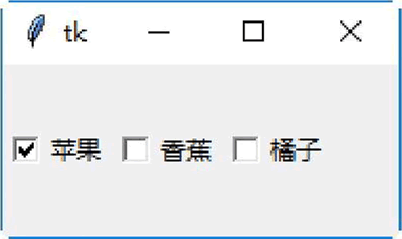
图 8 程序运行结果
图 8 程序运行结果
Entry控件
Entry控件用于在窗体或窗口内创建一个单行文本框。Entry控件的属性为 textvariable，此属性为用户输入的文字，或者是要显示在 Entry 控件内的文字。
Entry 控件的方法为 get()，此方法可以读取 Entry 控件内的文字。
下面的示例是在窗口内创建一个窗体，在窗体内创建一个文本框，让用户输入一个表达式。在窗体内创建一个按钮，单击此按钮即可计算文本框内所输入的表达式。在窗体内创建一个文字标签，将表达式的计算结果显示在此文字标签上。
from tkinter import *
win = Tk()
frame = Frame(win)
#创建一个计算器
def calc():
#将用户输入的表达式计算出结果后转换为字符串
result = "= " + str(eval(expression.get()))
#将计算的结果显示在Label控件上
label.config(text = result)
#创建一个Label控件
label = Label(frame)
#创建一个Entry控件
entry = Entry(frame)
#读取用户输入的表达式
expression = StringVar()
#将用户输入的表达式显示在Entry控件上
entry["textvariable"] = expression
#创建一个Button控件，当用户输入完毕后，单击此按钮即可计算表达式的结果
button1 = Button(frame, text="等于", command=calc)
#设置Entry控件为焦点所在
entry.focus()
frame.pack()
#Entry控件位于窗体的上方
entry.pack()
#Label控件位于窗体的左方
label.pack(side=LEFT)
#Button控件位于窗体的右方
button1.pack(side=RIGHT)
frame.mainloop()
保存并运行程序，在文本框中输入需要计算的公式，单击“等于”按钮，即可查看运算结果，如图 9 所示。
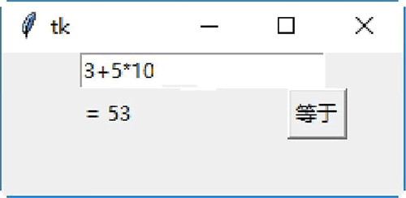
图 9 程序运行结果
图 9 程序运行结果
Label控件
Label 控件用于创建一个显示方块，可以在这个显示方块内放置文字或图片。当用户在 Entry 控件内输入数值时，其值会存储在 tkinter 的 StringVar 类内。可以将 Entry 控件的 textvariable 属性设置成 StringVar 类的实例变量，使用户输入的数值自动显示在 Entry 控件上。
expression = StringVar() entry = Entry(frame, textvariable=expression) entry.pack()此方式也适用于 Label 控件。可以使用 StringVar 类的 set() 方法直接写入 Label 控件要显示的文字。例如：
expression = StringVar()
Label(frame, textvariable=expression).pack()
expression.set("Hello Python")
下面的示例是在窗口内创建一个 3×3 的窗体表格，在每一个窗体内创建一个 Label 控件。在每一个 Label 控件内加载一幅图片，其中图片的名称分别为 a0.gif ～a8.gif，共 9 幅图片。
from tkinter import *
win = Tk()
#设置图片文件的路径
path = ""
img = []
#将9幅图片放入一个列表中
for i in range(9):
img.append(PhotoImage(file=path + "a" + str(i) + ".gif"))
#创建9个窗体
frame = []
for i in range(3):
for j in range(3):
frame.append(Frame(win, relief=RAISED, borderwidth=1,
width=158,height=112))
#创建9个Label控件
Label(frame[j+i*3], image=img[j+i*3]).pack()
#将窗体编排成3×3的表格
frame[j+i*3].grid(row=j, column=i)
win.mainloop()
保存并运行程序，结果如图 10 所示。
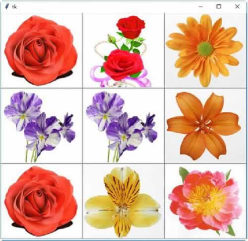
图 10 程序运行结果
图 10 程序运行结果
Listbox控件
Listbox 控件用于创建一个列表框。列表框内包含许多选项，用户可以选择一项或多项。Listbox 控件的属性如下：
- height：此属性设置列表框的行数目。如果此属性值为 0，就自动设置为能找到的最大选择项数目。
- selectmode：此属性设置列表框的种类，可以是 SINGLE、EXTENDED、MULTIPLE 或 BROWSE。
- width：此属性设置每一行的字符数目。如果此属性值为 0，就自动设置为能找到的最大字符数目。
Listbox控件的方法如下：
- delete(row [, lastrow])：删除指定行 row，或者删除 row 到 lastrow 之间的行。
- get(row)：取得指定行 row 内的字符串。
- insert(row , string)：在指定行 row 插入字符串 string。
- see(row)：将指定行 row 变成可视。
- select_clear()：清除选择项。
- select_set(startrow , endrow)：选择 startrow 与 endrow 之间的行。
下面的示例创建一个列表框，并插入 8 个选项。
from tkinter import *
win = Tk()
#创建窗体
frame = Frame(win)
#创建列表框选项列表
name = ["香蕉", "苹果", "橘子", "西瓜", "桃子", "菠萝", "柚子", "橙子"]
#创建Listbox控件
listbox = Listbox(frame)
#清除Listbox控件的内容
listbox.delete(0, END)
#在Listbox控件内插入选项
for i in range(8):
listbox.insert(END, name[i])
listbox.pack()
frame.pack()
win.mainloop()
保存并运行程序，结果如图 11 所示。
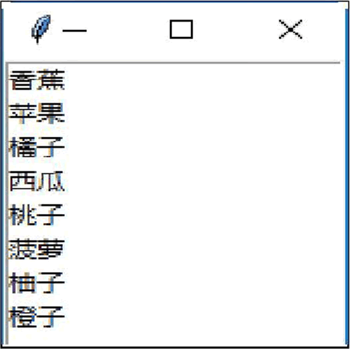
图 11 程序运行结果
图 11 程序运行结果
Menu控件
Menu 控件用于创建3种类型的菜单，即 pop-up（快捷式菜单）、toplevel（主目录）及 pull-down（下拉式菜单）。Menu控件的方法如下：
| 方 法 | 功 能 |
|---|---|
| add_command(options) | 新增一个菜单项。 |
| add_radiobutton(options) | 创建一个单选按钮菜单项。 |
| add_checkbutton(options) | 创建一个复选框菜单项。 |
| add_cascade(options) | 将一个指定的菜单与其父菜单连接，创建一个新的级联菜单。 |
| add_separator() | 新增一个分隔线。 |
| add(type, options) | 新增一个特殊类型的菜单项。 |
| delete(startindex [, endindex]) | 删除 startindex 到 endindex 之间的菜单项。 |
| entryconfig(index, options) | 修改 index 菜单项。 |
| index(item) | 返回 index 索引值的菜单项标签。 |
下表列举了 options 可以使用的选项和具体含义：
| options选项 | 含 义 |
|---|---|
| accelerator | 设置菜单项的快捷键，该快捷键会显示在菜单项目的右边。注意，此选项并不会自动将快捷键与菜单项连接在一起，必须另行设置。 |
| command | 选择菜单项时执行的 callback 函数。 |
| indicatorOn | 设置此属性，可以让菜单项选择 on 或 off。 |
| label | 定义菜单项内的文字。 |
| menu | 此属性与 add_cascade() 方法一起使用，用来新增菜单项的子菜单项。 |
| selectColor | 菜单项 on 或 off 的颜色。 |
| state | 定义菜单项的状态，可以是 normal、active 或 disabled。 |
| onvalue、offvalue | 存储在 variable 属性内的数值。当选择菜单项时，将 onvalue 内的数值复制到 variable 属性内。 |
| tearOff | 如果此选项为 True，在菜单项目的上面就会显示一个可选择的分隔线。此分隔线会将此菜单项分离出来成为一个新的窗口。 |
| underline | 设置菜单项中哪一个字符有下画线。 |
| value | 选择按钮菜单项的值。 |
| variable | 用于存储数值的变量。 |
下面的示例创建一个下拉式菜单，并在菜单项目内加入快捷键。
from tkinter import *
import tkinter.messagebox
win = Tk()
#执行[文件/新建]菜单命令，显示一个对话框
def doFileNewCommand(*arg):
tkinter.messagebox.askokcancel("菜单", "您正在选择“新建”菜单命令")
#执行[文件/打开]菜单命令，显示一个对话框
def doFileOpenCommand(*arg):
tkinter.messagebox.askokcancel ("菜单", "您正在选择“打开”菜单命令")
#执行[文件/保存]菜单命令，显示一个对话框
def doFileSaveCommand(*arg):
tkinter.messagebox.askokcancel ("菜单", "您正在选择“文档”菜单命令")
#执行[帮助/档]菜单命令，显示一个对话框
def doHelpContentsCommand(*arg):
tkinter.messagebox.askokcancel ("菜单", "您正在选择“保存”菜单命令")
#执行[帮助/文关于]菜单命令，显示一个对话框
def doHelpAboutCommand(*arg):
tkinter.messagebox.askokcancel ("菜单", "您正在选择“关于”菜单命令")
#创建一个下拉式菜单(pull-down)
mainmenu = Menu(win)
#新增"文件"菜单的子菜单
filemenu = Menu(mainmenu, tearoff=0)
#新增"文件"菜单的菜单项
filemenu.add_command(label="新建", command=doFileNewCommand,
accelerator="Ctrl-N")
filemenu.add_command(label="打开",
command=doFileOpenCommand,accelerator="Ctrl-O")
filemenu.add_command(label="保存",
command=doFileSaveCommand,accelerator="Ctrl-S")
filemenu.add_separator()
filemenu.add_command(label="退出", command=win.quit)
#新增"文件"菜单
mainmenu.add_cascade(label="文件", menu=filemenu)
#新增"帮助"菜单的子菜单
helpmenu = Menu(mainmenu, tearoff=0)
#新增"帮助"菜单的菜单项
helpmenu.add_command(label="文档",
command=doHelpContentsCommand,accelerator="F1")
helpmenu.add_command(label="关于",
command=doHelpAboutCommand,accelerator="Ctrl-A")
#新增"帮助"菜单
mainmenu.add_cascade(label="帮助", menu=helpmenu)
#设置主窗口的菜单
win.config(menu=mainmenu)
win.bind("<Control-n>", doFileNewCommand)
win.bind("<Control-N>", doFileNewCommand)
win.bind("<Control-o>", doFileOpenCommand)
win.bind("<Control-O>", doFileOpenCommand)
win.bind("<Control-s>", doFileSaveCommand)
win.bind("<Control-S>", doFileSaveCommand)
win.bind("<F1>", doHelpContentsCommand)
win.bind("<Control-a>", doHelpAboutCommand)
win.bind("<Control-A>", doHelpAboutCommand)
win.mainloop()
保存并运行程序，选择“文件”下拉菜单，选择“打开”子菜单，将会弹出“菜单”对话框。Message控件
Message 控件用于显示多行、不可编辑的文字。Message 控件会自动分行，并编排文字的位置。Message 控件的功能与 Label 控件的类似，但是 Message 控件多了自动编排的功能。
例如，创建一个 Message 控件。
from tkinter import * win = Tk() txt = "暮云收尽溢清寒，银汉无声转玉盘。此生此夜不长好，明月明年何处看。" msg = Message(win, text=txt) msg.pack() win.mainloop()保存并运行程序，结果如图 12 所示。
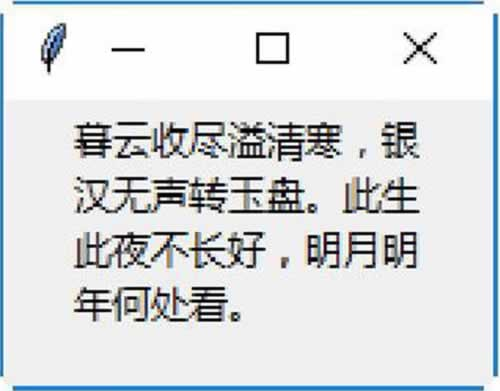
图 12 程序运行结果
图 12 程序运行结果
Radiobutton控件
Radiobutton 控件用于创建一个单选按钮。为了让一群单选按钮可以执行相同的功能，必须设置这群单选按钮的 variable 属性为相同值，value 属性值就是各单选按钮的数值。
Radiobutton 控件的属性如下：
- command：当用户选中此单选按钮时所调用的函数。
- variable：当用户选中此单选按钮时要更新的变量。
- width：当用户选中此单选按钮时要存储在变量内的值。
Radiobutton控件的方法如下：
- flash()：将前景颜色与背景颜色互换，以产生闪烁的效果。
- invoke()：执行 command 属性所定义的函数。
- select()：选择此单选按钮，将 variable 变量的值设置为 value 属性值。
下面的示例创建 5 个运动项目的单选按钮及一个文字标签，将用户的选择显示在文字标签上。
from tkinter import *
win = Tk()
#运动项目列表
sports = ["棒球", "篮球", "足球", "网球", "排球"]
#将用户的选择显示在Label控件上
def showSelection():
choice = "你的选择是：" + sports[var.get()]
label.config(text = choice)
#读取用户的选择值，是一个整数
var = IntVar()
#创建单选按钮，靠左边对齐
Radiobutton(win, text=sports[0], variable=var,
value=0,command=showSelection).pack(anchor=W)
Radiobutton(win, text=sports[1], variable=var,
value=1,command=showSelection).pack(anchor=W)
Radiobutton(win, text=sports[2], variable=var,
value=2,command=showSelection).pack(anchor=W)
Radiobutton(win, text=sports[3], variable=var,
value=3,command=showSelection).pack(anchor=W)
Radiobutton(win, text=sports[4], variable=var,
value=4,command=showSelection).pack(anchor=W)
#创建文字标签，用于显示用户的选择
label = Label(win)
label.pack()
win.mainloop()
保存并运行程序，选中不同的单选按钮将提示不同的信息，如图 13 所示。
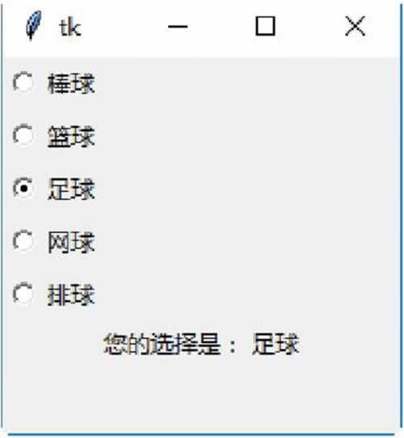
图 13 程序运行结果
图 13 程序运行结果
Scale控件
Scale 控件用于创建一个标尺式的滑动条对象，让用户可以移动标尺上的光标来设置数值。Scale控件的方法如下：
- get()：取得目前标尺上的光标值。
- set(value)：设置目前标尺上的光标值。
下面的示例创建 3 个 Scale 控件，分别用来选择 R、G、B 三原色的值。移动 Scale 控件到显示颜色的位置后，单击 Show color 按钮即可将 RGB 的颜色显示在一个 Label 控件上。
from tkinter import *
from string import *
win = Tk()
#将标尺上的0~130范围的数字转换为0~255范围的十六进制数字
#再转换为两个字符的字符串，如果数字只有一位，就在前面加一个零
def getRGBStr(value):
#将标尺上的0~130范围的数字，转换为0~255范围的十六进制数字
#再转换为字符串
ret = str(hex(int(value/130*255)))
#将十六进制数字前面的0x去掉
ret = ret[2:4]
#转换成两个字符的字符串，如果数字只有一位，就在前面加一个零
ret =ret.zfill(2)
return ret
#将RGB颜色的字符串转换为#rrggbb类型的字符串
def showRGBColor():
#读取#rrggbb字符串的rr部分
strR = getRGBStr(var1.get())
#读取#rrggbb字符串的gg部分
strG = getRGBStr(var2.get())
#读取#rrggbb字符串的bb部分
strB = getRGBStr(var3.get())
#转换为#rrggbb类型的字符串
color = "#" + strR + strG + strB
#将颜色字符串设置给Label控件的背景颜色
colorBar.config(background = color)
#分别读取3个标尺的值，是一个双精度浮点数
var1 = DoubleVar()
var2 = DoubleVar()
var3 = DoubleVar()
#创建标尺
scale1 = Scale(win, variable=var1)
scale2 = Scale(win, variable=var2)
scale3 = Scale(win, variable=var3)
#将选择按钮靠左对齐
scale1.pack(side=LEFT)
scale2.pack(side=LEFT)
scale3.pack(side=LEFT)
#创建一个标签，用于显示颜色字符串
colorBar = Label(win, text=" "*40, background="#000000")
colorBar.pack(side=TOP)
#创建一个按钮，单击后即将标尺上的RGB颜色显示在Label控件上
button = Button(win, text="查看颜色", command=showRGBColor)
button.pack(side=BOTTOM)
win.mainloop()
保存并运行程序，拖动滑块选择不同的 RGB 值，然后单击“查看颜色”按钮，即可查看对应的颜色效果，如图 14 所示。
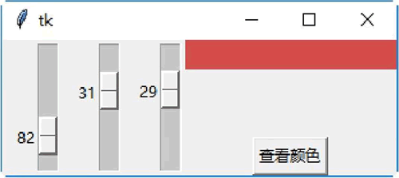
图 14 程序运行结果
图 14 程序运行结果
Scrollbar控件
Scrollbar 控件用于创建一个水平或垂直滚动条，可与 Listbox、Text、Canvas 等控件共同使用来移动显示的范围。Scrollbar 控件的方法如下：
- set(first, last)：设置目前的显示范围，其值在 0 与 1 之间。
- get()：返回目前的滚动条设置值。
下面的示例创建一个列表框（60 个选项），包括一个水平滚动条及一个垂直滚动条。当移动水平或垂直滚动条时，改变列表框的水平或垂直方向可见范围。
from tkinter import *
win = Tk()
#创建一个水平滚动条
scrollbar1 = Scrollbar(win, orient=HORIZONTAL)
#水平滚动条位于窗口底端，当窗口改变大小时会在X方向填满窗口
scrollbar1.pack(side=BOTTOM, fill=X)
#创建一个垂直滚动条
scrollbar2 = Scrollbar(win)
#垂直滚动条位于窗口右端，当窗口改变大小时会在Y方向填满窗口
scrollbar2.pack(side=RIGHT, fill=Y)
#创建一个列表框，x方向的滚动条指令是scrollbar1对象的set()方法
#y方向的滚动条指令是scrollbar2对象的set()方法
mylist = Listbox(win, xscrollcommand=scrollbar1.set,
yscrollcommand=scrollbar2.set)
#在列表框内插入60个选项
for i in range(60):
mylist.insert(END, "火树银花合，星桥铁锁开。暗尘随马去，明月逐人来。" + str(i))
#列表框位于窗口左端，当窗口改变大小时会在X与Y方向填满窗口
mylist.pack(side=LEFT, fill=BOTH)
#移动水平滚动条时，改变列表框的x方向可见范围
scrollbar1.config(command=mylist.xview)
#移动垂直滚动条时，改变列表框的y方向可见范围
scrollbar2.config(command=mylist.yview)
win.mainloop()
保存并运行程序，拖曳流动滚动条可以查看对应的内容，如图 15 所示。
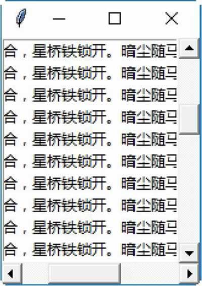
图 15 程序运行结果
图 15 程序运行结果
Text控件
Text 控件用于创建一个多行、格式化的文本框。使用Text控件，用户可以改变文本框内的字体及文字颜色。Text控件的属性如下：
- state：此属性值可以是 normal 或 disabled。state 等于 normal，表示此文本框可以编辑内容。state 等于 disabled，表示此文本框不可以编辑内容。
- tabs：此属性值为一个 tab 位置的列表。列表中的元素是 tab 位置的索引值，再加上一个调整字符——l、r、c。l 代表 left，r 代表 right，c 代表 center。
Text控件的方法如下：
- delete(startindex [, endindex])：删除特定位置的字符，或者一个范围内的文字。
- get(startindex [, endindex])：返回特定位置的字符，或者一个范围内的文字。
- index(index)：返回指定索引值的绝对值。
- insert(index [, string]...)：将字符串插入指定索引值的位置。
- see(index)：如果指定索引值的文字是可见的，就返回 True。
Text 控件支持 3 种类型的特殊结构，即 Mark、Tag 及 Index。
Mark 用来当作书签，书签可以帮助用户快速找到文本框内容的指定位置。tkinter 提供两种类型的书签，即 INSERT 与 CURRENT。INSERT 书签指定光标插入的位置，CURRENT 书签指定光标最近的位置。
Text控件用来操作书签的方法如下：
- index(mark)：返回书签行与列的位置。
- mark_gravity(mark [, gravity])：返回书签的 gravity。如果指定了 gravity 参数，就设置为此书签的 gravity。此方法用在要将插入的文字准确地放在书签位置的情况下。
- mark_names()：返回 Text 控件的所有书签。
- mark_set(mark, index)：设置书签的新位置。
- mark_unset(mark)：删除 Text 控件的指定书签。
Tag 用来对一个范围内的文字指定一个标签名称，如此就可以很容易地同时修改此范围内的文字的设置值。Tag 也可以用于将一个范围与一个 callback 函数连接。tkinter 提供一种类型的 Tag：SEL。SEL 指定符合目前条件的选择范围。
Text 控件用来操作 Tag 的方法如下：
- tag_add(tagname, startindex [, endindex]...)：将 startindex 位置或从 startindex 到 endindex 之间的范围指定为 tagname 名称。
- tag_config()：用来设置 tag 属性的选项。选项可以是 justify，其值可以是 left、right 或 center；选项也可以是 tabs，tabs 与 Text 控件的 tag 属性功能相同；选项还可以是 underline，underline 用于在标签文字内加下画线。
- tag_delete(tagname)：删除指定的 tag 标签。
- tag_remove(tagname, startindex [, endindex]...)：将 startindex 位置或从 startindex 到 endindex 之间的范围指定的 tag 标签删除。
Index 用于指定字符的真实位置。tkinter 提供下面类型的 Index：INSERT、CURRENT、END、line.column、line.end、用户自定义书签、用户自定义标签、选择范围、窗口的坐标、嵌入对象的名称和表达式。
下面的示例创建一个 Text 控件，并在 Text 控件内分别插入一段文字及一个按钮。
from tkinter import *
win = Tk()
win.title(string = "文本控件")
#创建一个Text控件
text = Text(win)
#在Text控件内插入一段文字
text.insert(INSERT, "晴明落地犹惆怅，何况飘零泥土中。\n\n")
#跳下一行
text.insert(INSERT, "\n\n")
#在Text控件内插入一个按钮
button = Button(text, text="关闭", command=win.quit)
text.window_create(END, window=button)
text.pack(fill=BOTH)
#在第一行文字的第13个字符到第14个字符处插入标签，标签名称为"print"
text.tag_add("print", "1.13", "1.15")
#设置插入的按钮的标签名称为"button"
text.tag_add("button", button)
#改变标签"print"的前景与背景颜色，并加下画线
text.tag_config("print", background="yellow", foreground="blue", underline=1)
#设置标签"button"的居中排列
text.tag_config("button", justify="center")
win.mainloop()
保存并运行程序，结果如图 16 所示。
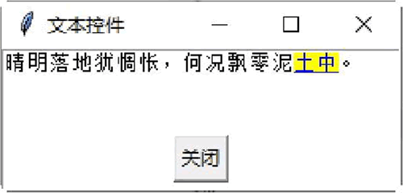
图 16 程序运行结果
图 16 程序运行结果
关注公众号「站长严长生」，在手机上阅读所有教程，随时随地都能学习。内含一款搜索神器，免费下载全网书籍和视频。

微信扫码关注公众号